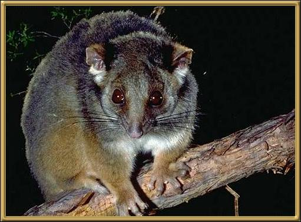

We see a lot of these animals and they're very adept at getting into roofs! They're found through all of the eastern seaboard, tasmania and a small part of southern West Australia. They use their tails as a fifth limb.
Photographer: Unknown